The Road to Nelson
The drive from Christchurch to Nelson wasn't the very longest on the trip (5 hours), but it was the worst. Left several hours afte I'd planned because so much of what I wanted to do in Christchurch was outdoors, didn't want to risk being rained out on the return trip.
Started out well enough..beautiful misty Newport Beach-type pastel sunset over water that turned white. The road north "along the coast" twisted endlessly through coastal mountains, sometimes inland, sometimes in a cliffside over the Pacific. Didn't come near the 100kph I'd scheduled, and the farm equipment on the road made it worse.
It got dark, and with New Zealand being what it is, crossed the insanely steep and winding Richmond range in a blinding thunderstorm. It was late. I was hungry. The trip was endless. Worst, there was no one to whine "Are we there yet?" to besides myself. I knew the response though, "You'll just have to learn to be patient."
(That phrase was the bane of my childhood. Once my wife went to Bro. Anandamoy for counseling and mentioned that I was envious she was apparently progressing much faster than I. Brother said, "Tell him he'll just have to learn to be patient.". Thanks, Bro.)
Speaking of no parents, if I wake up on July 5th this year, I will have outlived my father. Spooky.
Nelson
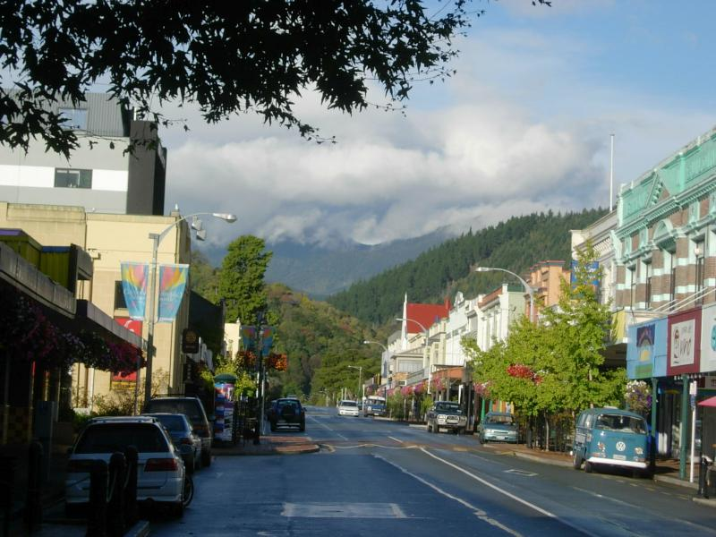
Nelson is New Zealand's arts and bohemia town. It's Laguna Beach without pretentiousness. Property values tripled here in the last couple years; an "executive home" with an ocean view goes for US$200K. Good place, as you'd expect in a town founded by a Saunders. Lotsa good art in town. If I were rich, everyone'd have great Christmas presents.
I arrived at 9PM on a rainy Saturday night. The town was shut up tight as a drum except for the pubs. Bohemia Kiwi style, I guess.
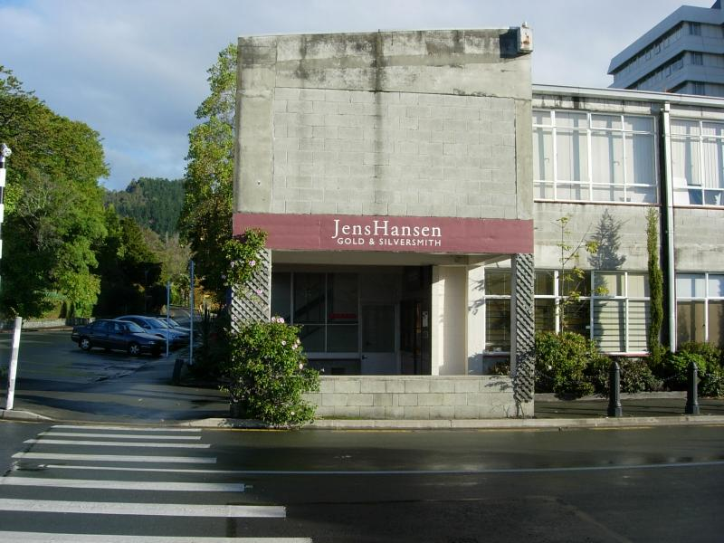
Jens Hansen won the competition to make the One Ring out of a field of 41. Unfortunately, he died before filming began. His son Thorkild carried on the work. I wish I was named Thorkild. (What do these guys name D&D characters? Pete?)
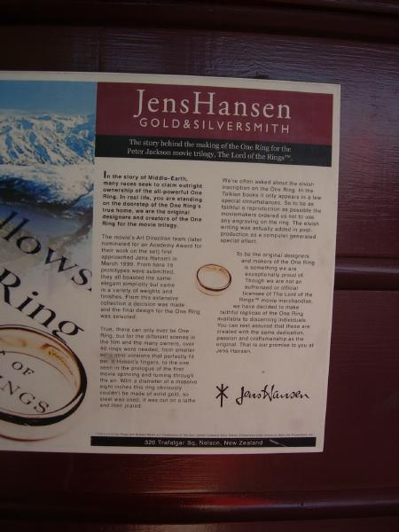
According to the poster, Thorkild will make duplicate rings "for discerning (wealthy) customers". This explains a lot about the state of world affairs.
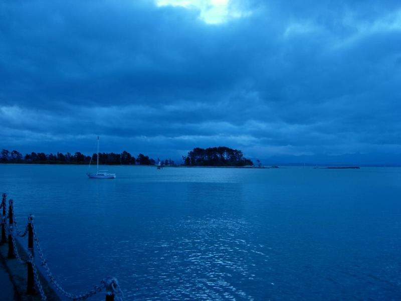
Nelson sits on Nelson Bay, taken here just after sunset.
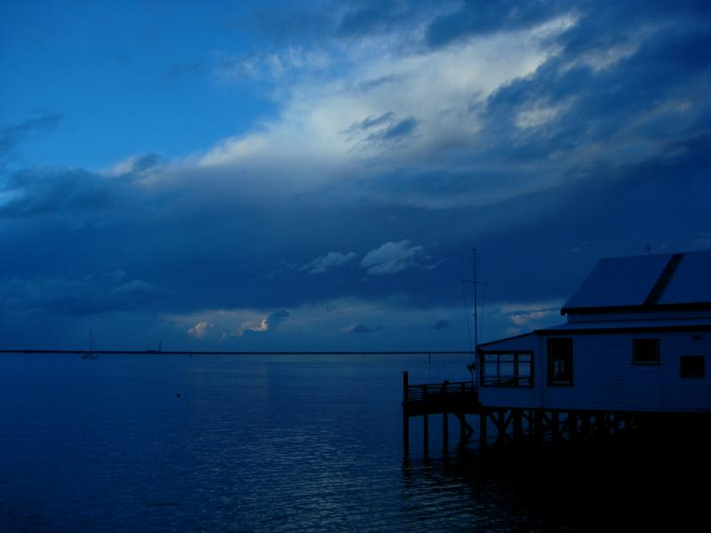
The Boat House is Nelson's best seafood restarunt, which explains why I was on the bay in twilight.
The maid in the hotel ripped off my stash of Ambien (about 50), which are now on the streets of Nelson somewhere. Not entirely a bad thing. I'd had a rough adjustment to 16 hours jet lag this time, and had to take Ambien for over a month to get to sleep. I wondered if I'd become psychologically addicted, taking it prophylactically because I was convinced I wouldn't be able to sleep without it (a self-fulfilling prophecy), and would do as well on a placebo. As it turned out, I did just fine without it, including sleeping in a lot of different places, which is when I usually need it the most. So I let a month lapse before getting any more (I'll need it on my US trip in June). Now I'm taking it according to my old criteria: when I wake up in the middle of the night and am still awake an hour later. Haven't taken any yet.
WOW
The World of Wearable Art (WOW) began in 1987 as a show founded by local sculptor Suzie Moncrieff to advertise her rural gallery (the best galleries in Nelson are 10km out of Nelson). It's grown into an international competition with winners selected from an annual 2-hour show, with an audience of around 30,000 per season. The museum is now a major tourist attraction, and worth it.
Had trouble finding the museum, so I stopped at a Shell station in the Maori part of town. The nice lady behind the bulletproof glass said it was hard to get there from here, so she drew me this map.
[agh, can't find the map! It was three sloppily drawn circles with lines arcing in and out at various angles]
Two of the pieces were so striking I wanted to design movies around them. One was a kind of serpentine armor with incredibly graceful lines. The other is hard to describe, it's what R2D2 would look like if he were in Serenity. There's no photography and I couldn't get pics, but to give you an idea, I ripped the following off the WOW web site.
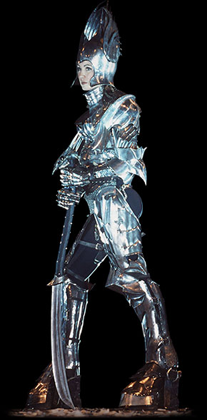
I kept wishing Sharon Roslund were here--she'd go nuts over this!
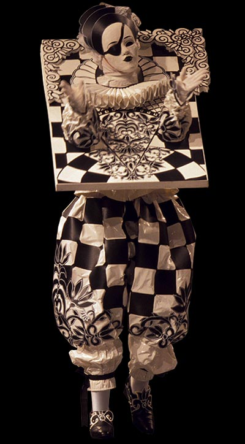
There was also a classic car collation including Ferraris, including
a rare Tipo 166 Inter along with Lamborghini, Fiat and Alfa Romeo. There were
also MV Agusta, Ducati, Benelli and Gilera motorcycles including Bimota technology
with a Tesi and a DBI on display. American Classics included a 1937 Cord 812
Westchester, Studebaker Commando Convertable, Buick Riviera plus an interesting
collection of European pre-war cars, including a Unic Taxi.
Abel Tasman
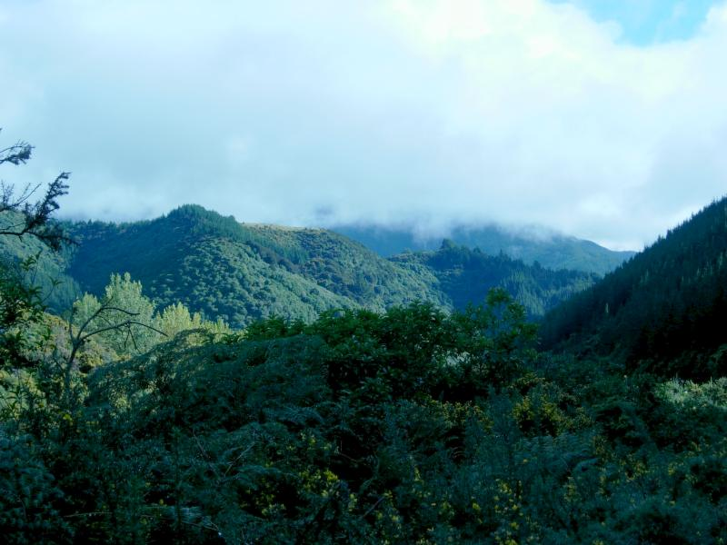
Abel Tasman discovered Abel Tasman in 1642. The Maori killed 4 of his crew, and he sailed away noting in the captain's logbook, "There be giants". It's about an hour northwest of Nelson. It's now a national park where you can do a two-day hike across a plateau, or along the coast, which consists of a series of isolated beaches reachable by water taxi. To get there from Nelson, you cross a beautiful mountain range (above).
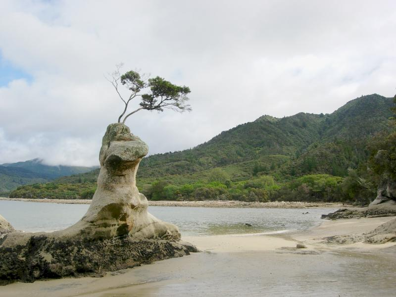
Parking at the Marahau entrance, I trekked over a long boardwalk spanning a salt marsh, then onto a hiking trail that connects some of the beaches.
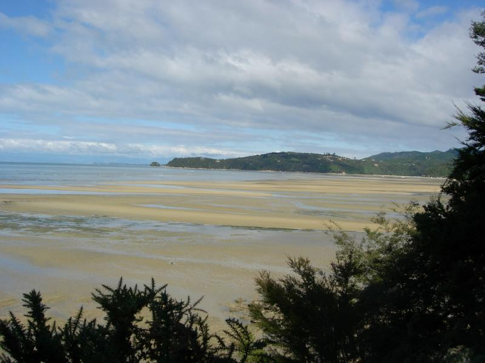
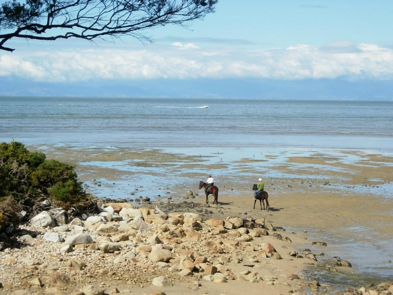
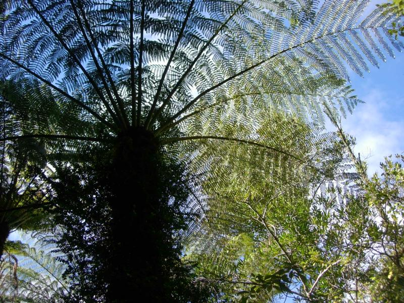
Silver Fern along a nature walk loop off the hiking trail. Little fantails (sparrow-sized birds) kept following me along the forest floor. Wondered if they thought my yellow t-shirt was sexy. Later found out that they know that people attract sand flies. The Maori returned the favor by feasting on the birds. The Maori tribe that killed Tasman's crewies was later killed off by two other tribes. Polynesian-style internecine warfare made it much easier for the English to move in.
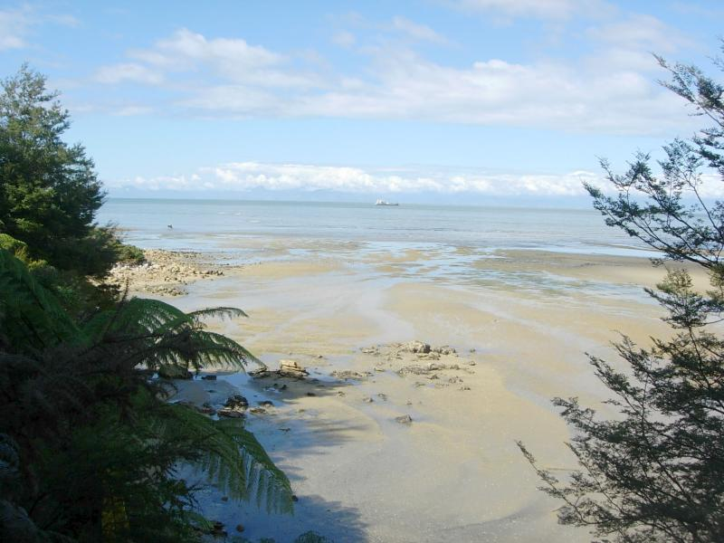
From the trail. Note horses in the water, left.
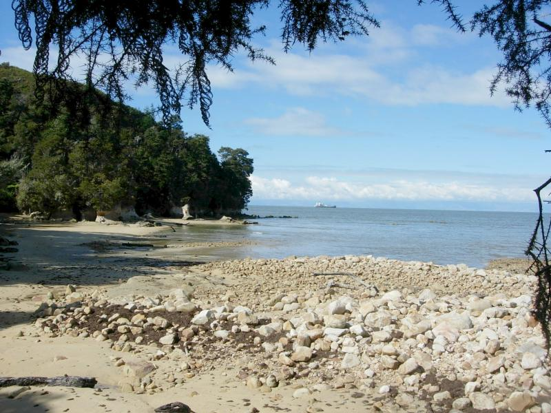